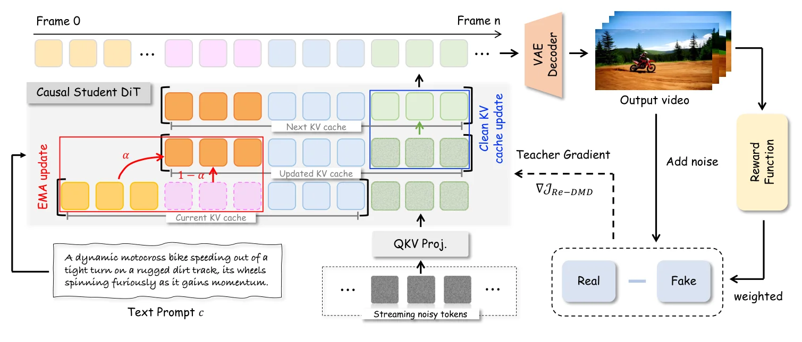
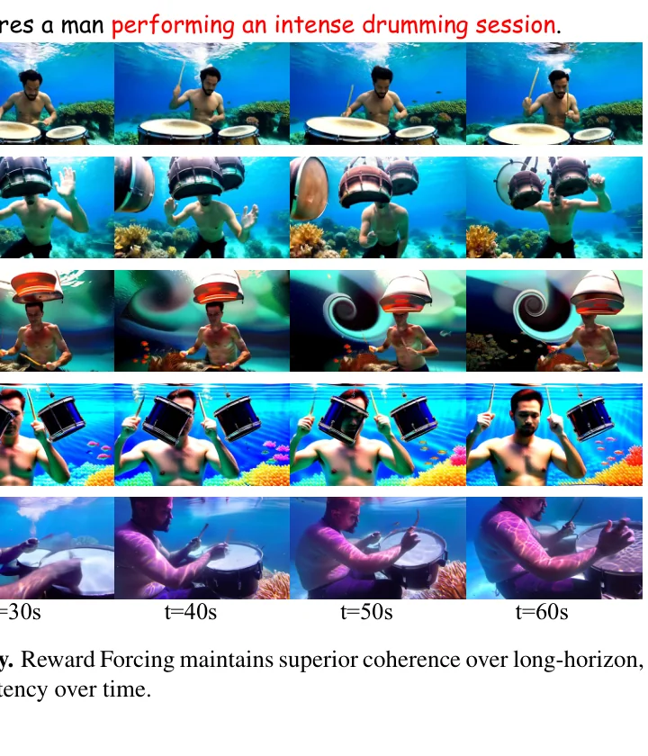
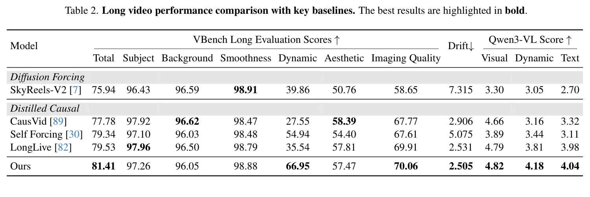
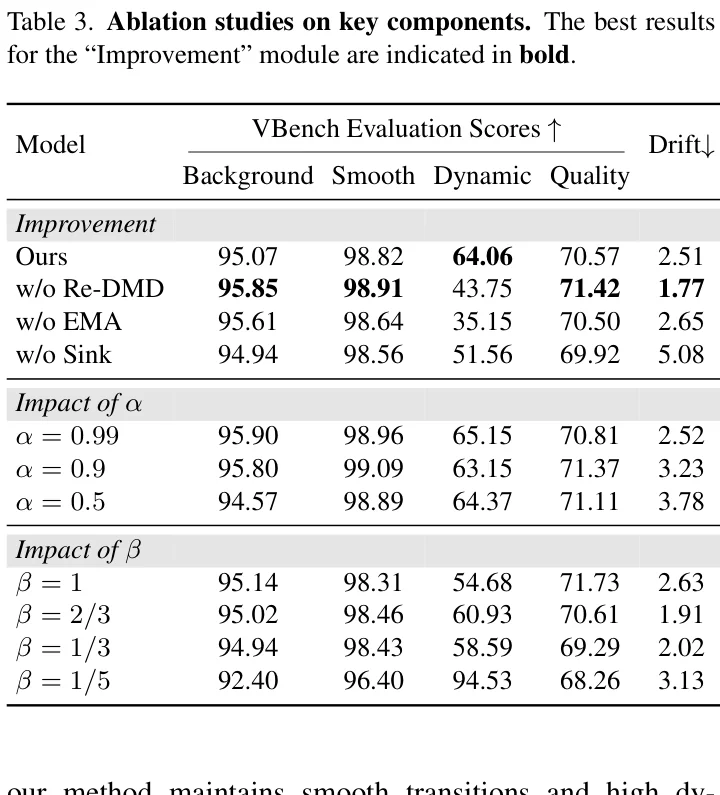
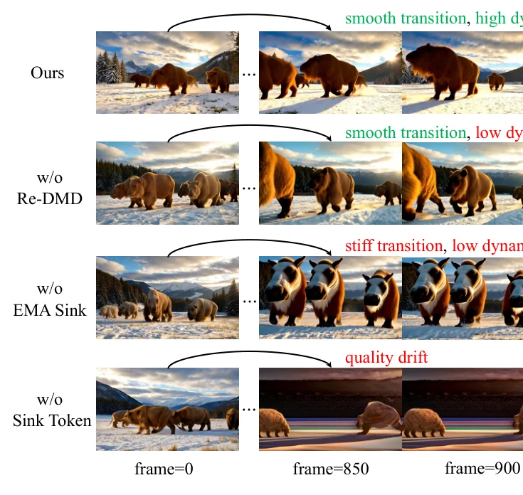

流式视频生成的核心困境
视频扩散Transformer（DiT）的scaling带来了令人惊叹的短视频生成质量，但其双向注意力机制要求同时去噪所有帧，无法满足交互式应用的流式生成需求。实现低延迟与高保真度的并存，是流式视频生成的核心挑战。
近期工作将慢速双向扩散模型蒸馏为高效的自回归学生模型——每帧仅通过滑动窗口注意力关注前序帧，借助KV缓存实现实时流式推理。然而，这类方法面临一个两难困境：误差累积。每帧依赖可能已损坏的前序输出，错误沿时间轴逐步传播。
为缓解误差累积，研究者引入 Attention Sink 机制：在KV缓存中保留初始帧的token。这一设计恢复了滑动窗口注意力的性能并缓解了长程漂移，但带来了新的问题——模型对初始帧产生过度注意力。后续帧无法自然演化，频繁出现"视觉闪回"（visual flashback），即画面回退到首帧外观。这本质上是模型将静态初始token作为"锚点"而产生的路径依赖。
更关键的是，经典的分布匹配蒸馏（DMD）虽能最小化师生分布间的KL散度来迁移知识，但无法解决过度注意力问题。退化的样本虽然缺乏运动动态，但视觉质量尚可，已接近教师分布，使得DMD难以区分和优化这些样本。
Reward Forcing 的核心洞察在于：问题不在于是否保留历史信息，而在于如何保留。静态的初始帧token如同"刻舟求剑"——随着视频推进，首帧内容与当前场景的相关性递减。EMA-Sink 的设计哲学是将"记忆"从静态快照转变为动态压缩的全局摘要，使模型既能回溯历史脉络，又不会被某个特定时间点"锁定"。
EMA-Sink：动态状态压缩机制
EMA-Sink 的核心思想是：不丢弃被逐出滑动窗口的帧，而是通过指数移动平均（EMA）将其信息持续融合到固定大小的压缩状态中，以极低的计算开销维持全局上下文。
问题形式化
给定噪声调度 $\mathcal{T} = \{t_j\}_{j=0}^T$，模型在每个去噪步骤 $t_j$ 处理帧 $i$ 的中间噪声状态 $x_{t_j}^i$，同时融入前序干净帧 $X_i^w = (x_{i-w+1:i-1})$，其中 $w$ 为外推时使用的窗口大小。模型首先估计去噪版本，然后通过前向扩散算子 $\Psi$ 重新引入较低水平的噪声：
当窗口推进到帧 $i+1$ 时，最旧的帧 $x_{i-w+1}$ 从即时访问中被永久移除，造成信息瓶颈。
EMA 更新方程
EMA-Sink 不丢弃被逐出的帧，而是维护压缩的全局状态 $S_i^*$。当帧 $x_{i-w}$ 被逐出滑动窗口时，其键值对 $(K_{i-w}, V_{i-w})$ 通过指数移动平均持续融合到压缩 sink 状态中：
其中 $\alpha \in (0,1)$ 是动量衰减因子，控制压缩速率。$\alpha$ 越大，历史信息衰减越慢，sink状态保留更长的"记忆"；$\alpha$ 越小，近期信息占比更高，sink状态对最新动态更敏感。
展开EMA递归式 $S_i = \alpha S_{i-1} + (1-\alpha) K_{i-w}$，可得 $S_i = (1-\alpha)\sum_{k=0}^{i-w} \alpha^k K_{i-w-k}$。这本质上是一个指数加权低通滤波器：每个历史帧的贡献以 $\alpha^k$ 的速率指数衰减。这意味着近期被逐出的帧贡献更大，而远古帧的信息以渐近方式保留——既不会完全遗忘，也不会被特定帧"锁定"。
全局上下文构建
在注意力计算时，将压缩的 sink 状态前置到局部窗口上下文：
其中 $K_{i-w+1:i}$ 和 $V_{i-w+1:i}$ 表示当前滑动窗口的键值状态。这一构造使每个query既能关注细粒度的局部上下文，又能访问粗粒度的全局历史。
历史信息压缩有多种可选方案：(1) 均值池化——对所有历史帧取平均，但丢失时序信息；(2) 学习型压缩——用可训练模块（如cross-attention）压缩历史，但引入额外参数和计算开销；(3) EMA——无参数、O(1)时间复杂度、保留指数衰减的时序权重。EMA的选择体现了"最小充分复杂度"原则：在不增加模型参数的前提下，用最简单的递归更新实现信息压缩，且其指数衰减特性天然匹配"近期更重要、远期渐遗忘"的时序先验。
为处理视频的时空特性同时维持因果关系，模型在计算注意力时采用旋转位置编码（ROPE）。位置编码以因果方式应用，确保每个位置只能关注序列中的前序位置。
EMA-Sink 的核心优势在于常数时间驱逐：帧被逐出时仅需一次加权平均（O(1)），而非重新计算注意力。注意力复杂度保持 $O(w^2)$（$w$为窗口大小），与序列长度无关。通过将历史压缩为固定大小的sink，方法实现了相对于序列长度的常数内存使用，同时保留全局上下文。可微的EMA使梯度能够通过压缩操作传播，支持端到端学习。
Re-DMD：奖励加权分布匹配蒸馏
分布匹配蒸馏（DMD）通过最小化师生分布间的反向KL散度，将多步扩散模型蒸馏为少步生成器。然而，DMD有一个根本局限：均匀对待目标分布的所有区域，缺乏根据任务特定指标优先处理高质量输出的机制。
DMD 的梯度公式
其中 $\epsilon \sim \mathcal{N}(0, I)$，$\Psi$ 表示在时间步 $t$ 的前向扩散。分数函数定义为：
其中 $\mu_{\text{real}}$ 是去噪估计，$\alpha_t, \sigma_t$ 是噪声调度参数。DMD冻结预训练的 $\mu_{\text{real}}$（教师）并在生成器输出上更新 $\mu_{\text{fake}}$。
在视频生成训练过程中，模型会逐渐产生越来越静态的帧。这些退化样本虽然缺乏运动动态，但视觉质量尚可，已经接近教师分布。由于DMD最小化的是分布间的KL散度，这些"好看但不动"的样本在分布层面距离教师很近，梯度极小——DMD无法有效区分和优化它们。这就形成了一个"局部最优陷阱"：模型卡在"静态但美观"的状态中无法逃脱。
从RL到Re-DMD：EM框架推导
Re-DMD 的关键洞察是将强化学习原理融入分布匹配。统一RL微调目标通过最大化最优视频生成的证据下界，建立了奖励最大化与原始模型保真度之间的显式权衡：
其中 $x_0$ 是输出，$r$ 是奖励模型，$c$ 是条件输入，$p$ 和 $q$ 是分布，$\beta$ 是正则化项。Re-DMD基于奖励加权回归框架，通过EM算法将RL问题重构为概率推理。
E-step：最优解
在E-step中，将Eq(3)作为约束优化问题求解，得到最优解：
其中 $Z(c) = \sum_{x_0} q(x_0|c) \exp\left(\frac{r(x_0, c)}{\beta}\right)$。将Eq(3)中的分布分配为 $q = p'_{\text{fake}}$ 和 $p = p'_{\text{real}}$。
最优解 $p(x_0|c) \propto q(x_0|c) \cdot \exp(r/\beta)$ 表明：最优分布是原分布 $q$ 被奖励指数加权后的归一化结果。高奖励样本的概率被指数级放大，低奖励样本被抑制。$\beta$ 控制这种重加权的强度：$\beta$ 越小，奖励影响越大，分布偏离原分布越远；$\beta$ 越大，分布越接近原分布，奖励影响越弱。
M-step：奖励加权梯度
在M-step中，将非参数最优模型 $p = p'_{\text{real}}$ 投影到参数化模型上，通过最大化期望对数似然：
对Eq(10)求导得到Re-DMD的梯度：
其中 $r_c(x_t)$ 由 $r_c(x_0)$ 估计。这种方法通过绕过不可处理的归一化常数并避免计算奖励函数的梯度来稳定训练并加速收敛。
Re-DMD的一个精妙设计是将奖励作为静态加权因子，而非通过奖励模型反向传播梯度。这一选择带来三个关键优势：(1) 避免奖励梯度噪声——VLM奖励模型的梯度可能极不稳定，直接反传会导致训练崩溃；(2) 计算效率——无需在奖励模型上计算梯度，大幅降低训练开销；(3) 避免典型RL计算成本——方法隐式优化约束奖励最大化问题（在分布匹配约束下最大化期望奖励），确保系统性质量提升而不发生分布崩溃。代价是奖励信号无法通过梯度反向影响生成器的深层表示，但这正是"分布匹配约束"的作用——它作为锚点防止过度偏移。
Re-DMD 与直接偏好优化（DPO）和群体相对策略优化（GRPO）都试图将奖励信号融入生成模型训练，但机制截然不同。DPO 从偏好数据集隐式学习偏好，无需显式奖励建模；GRPO 使用策略梯度直接优化奖励。而 Re-DMD 将奖励嵌入分布匹配框架中，作为KL梯度的静态权重——既保留了DMD的分布对齐能力，又引入了奖励偏好。这种设计的代价是奖励信号的表达能力受限（仅作为标量权重），但换来了训练稳定性和计算效率。论文指出，Self-Forcing++ 将 Flow-GRPO 集成到DMD蒸馏模型中以改善长时序平滑性，但其性能本质上依赖于基础模型的质量。
整体架构与训练流程

三阶段训练流程
关键实现细节
Reward Forcing 基于 Wan2.1-T2V-1.3B 构建，生成5秒视频，分辨率 $832 \times 480$。具体配置如下：
| 参数 | 值 | 说明 |
|---|---|---|
| 基础模型 | Wan2.1-T2V-1.3B | 双向扩散模型 |
| ODE训练对 | 16k | 从基础模型采样 |
| 数据集 | VidProM (LLM增强) | 文本提示来源 |
| 奖励函数 | VideoAlign 运动质量 | VLM评估 |
| β (奖励权重) | 1/2 | 平衡动态与一致性 |
| α (EMA衰减) | 0.99 | 长记忆保留 |
| 窗口大小 | 9 | 注意力窗口 |
| 去噪步数 | [1000, 750, 500, 250] | 4步均匀调度 |
| 训练步数 | 600 | ~3小时 |
| GPU | 64 × H200 | 总batch=64 |
| 学习率(G) | 2.0×10⁻⁶ | 生成器 |
| 学习率(s_fake) | 4.0×10⁻⁷ | fake score |
| 更新频率 | 每5步更新G | 交替更新 |
4步去噪调度 $[1000, 750, 500, 250]$ 是质量与速度的折衷：步数太少（1-2步）导致去噪不充分，步数太多增加延迟。窗口大小 $w=9$ 在 VBench 上达到了最佳的质量-速度平衡点——论文 Figure 6 显示推理FPS与注意力窗口大小成反比，$w=9$ 时达到 23.1 FPS。每3帧为一个chunk进行chunk-wise去噪，是 Self-Forcing 的默认配置。生成器每5步更新一次的设计防止 fake score 和 generator 之间的"追赶"不稳定。
数据预测模型
基于 Wan2.1 和 Self Forcing 的流匹配框架，采用时间步偏移：
其中预处理系数 $c_{\text{skip}}, c_{\text{in}}, c_{\text{out}}$ 均为1，$c_{\text{noise}}(t) = t$。少步采样采用均匀4步调度 $\{1000, 750, 500, 250\}$。
长视频生成面临密集因果注意力的二次复杂度。局部窗口注意力将复杂度限制在窗口大小范围内，与序列长度无关。KV缓存按窗口维度而非视频长度扩展，更小的窗口加速推理并显著提升效率。最终在单张 H100 GPU 上实现 23.1 FPS 的实时生成速度——比 SkyReels-V2 快 47.14 倍，比 Self Forcing 快 1.36 倍。
代码实现解析
Reward Forcing 尚未公开代码仓库，但其架构基于 Self-Forcing 和 CausVid 构建。以下代码实现基于论文公式和这两个开源仓库的代码模式进行还原。
1. KV Cache 初始化与滑动窗口
基于 Self-Forcing 的 causal_diffusion_inference.py，KV缓存通过 local_attn_size 控制滑动窗口大小，每个transformer block维护独立的键值缓存。
# KV Cache 初始化 (基于 Self-Forcing 代码还原)
class CausalDiffusionPipeline:
def _initialize_kv_cache(self, batch_size, dtype, device):
# 滑动窗口大小决定 KV cache 容量
if self.local_attn_size != -1:
kv_cache_size = self.local_attn_size * self.frame_seq_length
else:
kv_cache_size = 32760 # 全注意力回退
kv_cache = []
for _ in range(self.num_transformer_blocks): # 30 blocks
kv_cache.append({
"k": torch.zeros([batch_size, kv_cache_size, 12, 128],
dtype=dtype, device=device),
"v": torch.zeros([batch_size, kv_cache_size, 12, 128],
dtype=dtype, device=device),
"global_end_index": torch.tensor([0], device=device),
"local_end_index": torch.tensor([0], device=device)
})
return kv_cache
def _update_kv_cache(self, latents, timestep, ...):
# 用 timestep=0 重新运行以用干净上下文更新 KV cache
self.generator(
noisy_image_or_video=latents,
timestep=timestep * 0, # clean context
kv_cache=self.kv_cache_pos,
current_start=current_start * self.frame_seq_length,
cache_start=cache_start * self.frame_seq_length
)2. EMA-Sink 更新机制
以下伪代码基于论文 Eq(4-7) 实现 EMA-Sink 的核心更新逻辑。当帧被逐出滑动窗口时，其KV通过EMA融合到sink状态。
# EMA-Sink 更新机制 (基于论文公式 Eq 4-7)
class EMASink:
def __init__(self, sink_size, num_heads, head_dim, alpha=0.99):
self.alpha = alpha # EMA 动量衰减因子
self.sink_size = sink_size # 固定 sink token 数量
# 初始化 sink 状态 (从初始帧的 KV 初始化)
self.sink_K = None # [B, sink_size, num_heads, head_dim]
self.sink_V = None
def initialize_from_frames(self, initial_K, initial_V):
# 用初始帧的 KV 初始化 sink 状态
self.sink_K = initial_K[:, :self.sink_size].clone()
self.sink_V = initial_V[:, :self.sink_size].clone()
def update(self, evicted_K, evicted_V):
# Eq(4): S_i^K = α * S_{i-1}^K + (1-α) * K_{i-w}
self.sink_K = (self.alpha * self.sink_K +
(1 - self.alpha) * evicted_K)
# Eq(5): S_i^V = α * S_{i-1}^V + (1-α) * V_{i-w}
self.sink_V = (self.alpha * self.sink_V +
(1 - self.alpha) * evicted_V)
def get_global_context(self, window_K, window_V):
# Eq(6-7): K_global = [S_K; K_window], V_global = [S_V; V_window]
K_global = torch.cat([self.sink_K, window_K], dim=1)
V_global = torch.cat([self.sink_V, window_V], dim=1)
return K_global, V_global
# 在推理循环中使用
def streaming_inference(pipeline, prompt, num_frames, window_size=9):
ema_sink = EMASink(sink_size=2, alpha=0.99)
kv_cache = pipeline._initialize_kv_cache(...)
for i in range(num_frames):
# 1. 生成当前帧
frame = pipeline.generate_frame(kv_cache, prompt, ...)
# 2. 更新 KV cache
if cache_full:
# 3. 提取被逐出的 KV
evicted_K, evicted_V = kv_cache.evict_oldest()
# 4. EMA 更新 sink 状态
ema_sink.update(evicted_K, evicted_V)
# 5. 构建全局上下文
K_global, V_global = ema_sink.get_global_context(window_K, window_V)
# 6. 因果注意力计算 (ROPE)
output = attention(query, K_global, V_global, rope=True, causal=True)3. Re-DMD 训练循环
以下伪代码基于论文 Eq(11) 和 CausVid 的 dmd.py 实现，展示了 Re-DMD 的核心训练逻辑——在DMD梯度上施加奖励权重。
# Re-DMD 训练循环 (基于论文 Eq 11 + CausVid DMD 代码)
class ReDMDTrainer:
def __init__(self, generator, real_score, fake_score,
reward_fn, beta=0.5, lr_G=2e-6, lr_fake=4e-7):
self.generator = generator # G_θ (可训练)
self.real_score = real_score # s_real (冻结的教师)
self.fake_score = fake_score # s_fake (可训练)
self.reward_fn = reward_fn # VLM 运动质量奖励
self.beta = beta # β = 1/2
self.opt_G = AdamW(generator.parameters(), lr=lr_G)
self.opt_fake = AdamW(fake_score.parameters(), lr=lr_fake)
def compute_re_dmd_gradient(self, noise, conditional_dict):
# Step 1: 生成器前向 (保留梯度)
generated = self.generator(noise, conditional_dict)
# Step 2: 解码为视频帧用于奖励计算
video_frames = self.vae_decode(generated)
# Step 3: 计算运动质量奖励 (静态加权, 不反传梯度)
with torch.no_grad():
reward = self.reward_fn(video_frames, conditional_dict)
# Eq(11): exp(r_c(x_t)/β) 作为静态权重
reward_weight = torch.exp(reward / self.beta)
# Step 4: 计算分数函数差异 (KL 梯度核心)
with torch.no_grad():
pred_fake = self.fake_score(generated, conditional_dict)
pred_real_cond = self.real_score(generated, conditional_dict)
pred_real_uncond = self.real_score(generated, {})
# CFG (classifier-free guidance)
pred_real = pred_real_cond + (pred_real_cond - pred_real_uncond) * guidance_scale
# KL 梯度: s_real - s_fake
kl_grad = pred_fake - pred_real
# 归一化
normalizer = torch.abs(generated - pred_real).mean(dim=[1,2,3,4], keepdim=True)
kl_grad = kl_grad / normalizer
# Step 5: 应用奖励加权 (Eq 11)
weighted_grad = reward_weight * kl_grad
# Step 6: 计算损失 (梯度通过生成器传播)
loss = 0.5 * F.mse_loss(generated,
(generated - weighted_grad).detach(),
reduction="mean")
return loss
def train_step(self, noise, conditional_dict):
# 交替更新: 每5步更新一次生成器
if self.step_count % 5 == 0:
loss = self.compute_re_dmd_gradient(noise, conditional_dict)
self.opt_G.zero_grad()
loss.backward()
self.opt_G.step()
# 更新 fake score
with torch.no_grad():
generated = self.generator(noise, conditional_dict)
fake_loss = self.fake_score.compute_denoising_loss(generated)
self.opt_fake.zero_grad()
fake_loss.backward()
self.opt_fake.step()
self.step_count += 1从代码层面可以看到三个精妙的设计：(1) 奖励不反传梯度——reward_weight 在 torch.no_grad() 上下文中计算，作为静态标量乘到KL梯度上，避免了VLM奖励模型可能引入的梯度噪声；(2) 交替更新策略——生成器每5步更新一次，fake score每步更新，这种"慢快"节奏防止两者"追赶"导致的不稳定；(3) 梯度归一化——用 |x - pred_real| 的均值作为归一化因子，使不同样本的梯度量级一致，防止某些样本的梯度主导训练。
实验结果与分析
短视频生成：VBench 全面领先

Reward Forcing 以 84.13 的总分超越了所有现有基线，包括 Self Forcing (83.80) 和 LongLive (83.22)。值得注意的是，该方法使用了最小的注意力窗口（窗口大小9）同时达到了最快的推理速度——比 SkyReels-V2 快 47.14 倍，比 Self Forcing 快 1.36 倍。
长视频生成：动态指标 88.38% 提升

在60秒长视频生成中，Reward Forcing 总分 81.41，显著超越 SOTA 基线 LongLive (79.53)。最突出的改进在动态指标：66.95，比 LongLive 的 35.54 提升了 88.38%。同时质量漂移最低（2.505），证明 EMA-Sink 有效维持了长程一致性。
这一惊人提升来自两个创新的协同效应：EMA-Sink 消除了对初始帧的过度依赖（从结构上解除"帧复制"约束），Re-DMD 则在蒸馏层面优先匹配高动态样本。消融实验证明两者缺一不可——移除 Re-DMD 后动态分从 64.06 降至 43.75，移除 EMA 后进一步降至 35.15。这说明 EMA-Sink 提供了"能力上限"（模型可以生成动态内容），而 Re-DMD 提供了"优化方向"（引导模型优先学习动态样本）。
消融实验


| 配置 | Dynamic ↑ | Drift ↓ | 关键发现 |
|---|---|---|---|
| 完整模型 | 64.06 | 2.51 | 平滑过渡 + 高动态 |
| w/o Re-DMD | 43.75 | 1.77 | 平滑但低动态 |
| w/o EMA | 35.15 | 2.65 | 帧复制 + 极低动态 |
| w/o Sink | 51.56 | 5.08 | 质量退化 + 高漂移 |
α（EMA衰减）：$\alpha=0.99$ 达到运动平滑度 98.96 与漂移 2.52 的最佳平衡。降低 $\alpha$ 到 0.9 虽然提升了平滑度到 99.09，但漂移增至 3.23——说明过快的EMA更新导致sink状态"健忘"，无法有效维持长程一致性。β（奖励权重）：$\beta=1/2$ 是最优选择。过小的 $\beta$（如 1/5）导致动态分过高（94.53）但背景一致性（92.40）和图像质量（68.26）严重退化——奖励权重过大导致模型"为了动态而动态"，牺牲了视觉保真度。过大的 $\beta$（如 1）则动态不足（54.68）。
用户研究与 Qwen3-VL 评估
20名参与者对4种方法的60秒视频进行评估（4分制），Reward Forcing 在所有维度上全面领先：
| 方法 | 时序一致性 | 动态复杂度 | 整体偏好 |
|---|---|---|---|
| CausVid | 1.81 | 1.73 | 1.87 |
| Self Forcing | 1.19 | 1.75 | 1.27 |
| LongLive | 2.79 | 2.38 | 2.75 |
| Reward Forcing | 3.60 | 3.72 | 3.75 |
Qwen3-VL-235B-A22B-Instruct 的自动评估结果同样确认了全面领先：视觉质量 4.82、动态 4.18、文本对齐 4.04。
Self Forcing 在用户研究中时序一致性仅 1.19（接近"Poor"），这与论文中"高动态但严重漂移"的描述一致。Self Forcing 虽然动态分数较高，但其无sink机制的设计导致长视频生成时质量快速退化。LongLive 通过KV recaching缓解了这一问题（一致性2.79），但牺牲了动态（2.38）。Reward Forcing 通过 EMA-Sink + Re-DMD 的组合，首次在一致性(3.60)和动态(3.72)上同时接近"Good"水平，验证了"动态记忆"范式的有效性。
自主科研问题
基于对 Reward Forcing 的深入分析，以下提出五个值得探索的研究方向，每个问题附带理论分析。
EMA-Sink 将整个视频历史压缩到固定大小的sink token中。从信息论角度，这是一个有损压缩过程——sink token的容量（token数 × 每token维度）决定了能保留的最大信息量。对于极长视频（如数千帧），历史信息必然以指数速率丢失。理论上，sink token的最优大小应与视频的有效信息维度（而非帧数）成正比。一个自然的问题是：能否设计自适应大小的sink，根据历史复杂度动态调整容量？这需要解决"何时扩容"和"如何压缩"的联合优化问题，可能需要引入信息瓶颈理论的形式化。
论文在讨论部分承认了奖励函数优化方向与VBench评估准则之间的错配问题。VideoAlign的运动质量奖励可能过度偏重时序一致性而忽略美学质量，导致奖励改善无法等比例转化为VBench分数提升。根本原因在于单一标量奖励无法捕捉视频质量的多维性。解决方向包括：(1) 多目标奖励建模——为不同质量维度（运动、美学、语义）训练独立奖励模型，通过帕累托优化联合提升；(2) 分层奖励模型——在不同时间尺度评估质量（帧级、片段级、视频级）；(3) 人机协作反馈——将人类感知判断嵌入奖励循环。这需要重新审视RLHF在视频生成中的适用性边界。
EMA 使用指数核 $w(k) = (1-\alpha)^k$ 对历史帧加权。但不同的核函数可能更适合不同的视频内容：对于场景导航类视频，均匀核（所有历史等权）可能更好；对于动作类视频，高斯核（集中在局部历史）可能更优。理论上，最优核函数应与视频的时序自相关结构匹配。一个有趣的研究方向是学习型压缩核——让模型自动学习最优的历史衰减模式，而非固定使用指数核。但引入可学习参数会增加计算开销和过拟合风险，需要找到参数效率与表达能力的平衡点。
当前 Re-DMD 的奖励函数仅评估运动质量，但实际应用中视频生成常需要满足多模态约束（如音频同步、轨迹跟随、物理合理性）。将 Re-DMD 扩展到多模态条件面临两个挑战：(1) 奖励函数的设计——如何评估音频-视频同步或轨迹一致性？可能需要专门的多模态奖励模型；(2) 多奖励融合——当存在多个奖励信号时，如何确定权重？简单的加权平均可能导致"顾此失彼"。理论框架可能需要从单目标EM扩展到多目标EM，这在概率推理中是一个开放问题。此外，不同奖励的梯度尺度差异可能导致训练不稳定，需要自适应归一化策略。
EMA-Sink 通过无参数的EMA压缩历史，而 Test-Time Training 方法（如 One-Minute Video Generation）在推理时对模型进行在线微调以适应长序列。两者本质上是互补的：EMA-Sink 解决"记忆容量"问题（如何保留历史），TTT 解决"模型适应"问题（如何处理超出训练长度的序列）。将两者结合的潜在方案是：在EMA-Sink的基础上，定期对sink状态进行TTT式的"回忆巩固"——用少量梯度更新调整模型参数以更好地利用压缩的历史信息。但这面临灾难性遗忘的风险：在线微调可能导致模型遗忘预训练知识。需要设计正则化策略（如LoRA式的低秩适应）来限制参数漂移幅度。
总结与展望
Reward Forcing 通过两个核心创新——EMA-Sink 和 Re-DMD——成功解决了流式视频生成中"低延迟 vs 高动态保真度"的核心矛盾。EMA-Sink 将静态的初始帧锚点转变为动态压缩的历史记忆，以 O(1) 的代价维护全局上下文；Re-DMD 将奖励信号嵌入分布匹配框架，以静态加权的方式引导模型优先学习高动态样本，避免了典型RL的计算开销和不稳定性。
Reward Forcing 的贡献不仅在于技术层面的两个创新，更在于范式层面的启示：在蒸馏框架中嵌入奖励偏好不一定需要复杂的策略梯度——一个简单的指数加权就能有效偏置分布匹配方向。同样，维护长程一致性不一定需要更大的上下文窗口——一个固定大小的"动态记忆"就能替代静态的初始帧锚点。这种"最小充分复杂度"的设计哲学，为未来高效视频生成系统的设计提供了重要参考。
技术局限
- 奖励-评估错配：单一运动质量奖励无法全面代表视频质量，与多维评估准则存在系统性错配
- VLM奖励局限：当前视频奖励模型难以捕捉细微时序伪影（如帧抖动）和复杂语义属性
- sink容量限制：固定大小的sink token对极长视频存在信息容量瓶颈
- 基础模型依赖：性能受限于Wan2.1-1.3B的基础能力，scaling到更大模型的效果未知
未来方向
论文指出，随着视频奖励模型的进步，该框架将自然受益。有前景的研究方向包括：多目标奖励建模（为不同质量维度设计独立组件）、分层模型（在多时间尺度评估质量）、人机协作反馈机制、领域自适应模型（按内容类型调整评估准则），以及编码物理和语义先验的架构设计。
Reward Forcing 建立了流式视频生成的新基准——23.1 FPS 的实时速度加上高动态保真度，使其更接近"世界模拟器"的愿景。EMA-Sink 的"动态记忆"机制和 Re-DMD 的"奖励驱动蒸馏"思想，不仅适用于视频生成，也可推广到其他需要长程序列建模和奖励对齐的领域，如机器人轨迹规划、游戏环境模拟等。随着交互式视频生成（论文展示的prompt切换功能）的成熟，这类方法有望成为构建交互式虚拟世界的基础设施。